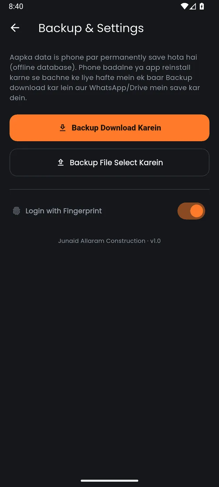

Mobile
Axon Construction
A contractor's site book — materials, labour, and who is still owed money.

The problem
A contractor's real question is never what was spent. It is who is still owed money - and that is the number a paper site book loses first.
Built for a construction contractor in Karachi.
What it does
Every site expense logged by category with quantity, rate, supplier, payment method and a note; money coming in from the owner tracked separately from money going out.
The report answers the real question: total, paid, and due, with a breakdown by category and a paid-versus-due split on every single entry.
Three details give away who it was built for. The entry placeholders read Bajri, Sariya, Mazdoori. The amount field opens a custom keypad with a calculator in it rather than the system keyboard, for entering figures one-handed on site. And the backup screen speaks Roman Urdu, telling the user to keep the file in WhatsApp - because that is where they actually keep things.
Details
- Total, paid and due, with a donut breakdown by category and a paid-vs-due split per entry
- Placeholders read "Bajri, Sariya, Mazdoori" — written in the vocabulary of a Karachi site
- A custom numeric keypad with a calculator in it, for entering figures one-handed on site
- Fully offline, with a backup you can hand to WhatsApp
Screens 02-06 come from the source in the repo, which has no login gate. The newer APK adds one and its source is missing.
More screens


